Recoome
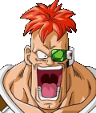Version: 2.0
Created by: Chrono_Strife and Neocide
This character's Programming is open source(not the sprites).
Contact: chronostrifeff7h@hotmail.com
Website: http://members.lycos.co.uk/cstrife/index.html
Contents:
::Character Information::::Stats and Abilities::
::Updates and Fixes::
::Pallete Options::
::Command List::
::Credits and Shouts::
Character Information:
| 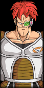 |
Recoome is one of the more eccentric members of the The Ginyu Force(Ginyu Tokusentai). Acting like a goofball is taken to a whole new level with this powerful member of the Force, even more so than Ginyu himself. While Recoome may not be the smartest man in the universe, he is a genius in battle, and has super strength and resilience. Easily defeating Vegeta, Gohan, and Krillin, he is a force to be reckoned with.
Recoome is also a master of pose striking, showing off his moves more so than his Captain, Ginyu. His attacks normally incorporate his name in some way, such as "Recoome Kick" or "Recoome Bomber." And they generally begin with him doing a stylish pose, before delivering the destructive damage behind his attack. He was defeated by Goku on Namek with a single semi-Super Saiyan elbow to the stomache, then shortly after his unconcious body was destroyed by Vegeta. Recoome would then wreak havoc in the next dimension, attacking King Kai's planet, where he'd be defeated by Yamcha. And later in Hell where he would continue to serve Freeza until being beaten once again by Goku and Pikkon. |
Stats and Abilities:


|
 Grappler. Primarily uses grab attacks.
Grappler. Primarily uses grab attacks.
|
| Strength: Power: Efficiency: Speed: Technique: Style: | Average Physical Damage. Average Energy Damage. Represents Energy Consumption vs Damage. Movement and Attack Speed. Number of special abilities. Fighting style character specializes in. |
Updates and Fixes:
| October 2009: Version 2.0 =Additions: --Zanzokens Forward, Back, and Up --Supers: Recoome Falling Star, Recoome Ultra Fighting Bomber --Specials: Leg Drop --Throws: Suplex --Teleport attacks --Additional basics, all buttons have a seperate attack now. --Recoome throw Ki Blast chain. --Super Portraits. Dizzy Stars. Dash FX. --Additional "semi-secret" victory pose. "Tokusentai! Tokusentai!" ==Changes/Fixes: --All sprites updated by Neocide. Some additional fixes by Roken and additions by Chrono_Strife and OS Team. --All attacks modified. ---Recoome Meteor Slam. Now works as a special with sliding grab. ---Reccome Toss. Now works as a special with a quick walk into grab. ---Recoome Punch. Now slides forward and applies one hits worth of armor mode. ---Recoome Kick. Now works as a counter, and auto-combos into a slam attack. ---Recoome Hyper Combo. Now dashes faster and further, charge up state for it takes less time. --Fly Mode Removed. --Infinite Priority fixed. --CSLN boxes improved. --Addition fall sprites added for smoother animation and improved compatability with other characters. --The FX on all attacks which used explods and helper FX have been improved/fixed. --Sound improvements/additions, voices moved to channel 0. --Dashing/Air Dashing systems modified. Excess use of air dashing results in powerloss. --Off screen Recoome handling fixed, less jerky. --Throws have all been fixed, p2facing=1/-1 added as needed. --Basic Combo system, Basic->Special, and Basic->Super chaining improved. --Lots of animation issues fixed. --Command changes. --Changed some constants. Height, Walk Speeds, Run Speeds, Neutral Jump height all increased. --Damage Dampener Overhauled. Reduces up to 80% of Recoome's attack power over 10 hits. --Power up buttons changed to B+Y leaving A+X as teleport buttons and possible evade in the future. August 2006: Version 1.0 =Additions: --Everything. |
Pallette Options:
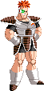 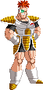 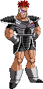
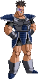
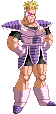
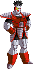
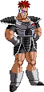
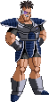
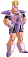
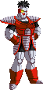
In Order: A,B,C,X,Y,Z,S+A,S+B,ETC
Command List:
Basics:
Weak Punch:Medium Punch:
Strong Punch:
Weak Kick:
Medium Kick:
Strong Kick:
Any Punch Command: Any Kick Command: Taunt:
[ (S): Standing ][ (C): Crouching ][ (A): Air ][ (H): Hold Button down. ]
Additional Basics:
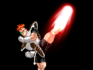Launcher(S): +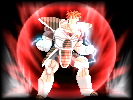Power Up(S):
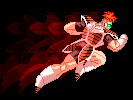Zanzoken(Dashing):
Throws and Grabs:
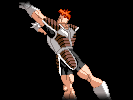Basic Throw(S):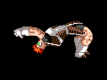Suplex(S):
Specials:
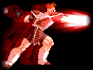Recoome Punch(S):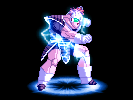Recoome Kick(Counter)(S):
Note: Drains power when not attacked. Requires a small amount of power to be used.
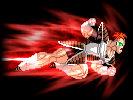Recoome Rush:
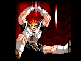Leg Drop(A):
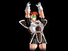Toss Up, Elbow Down(S):
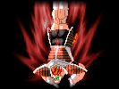Recoome Meteor(S):
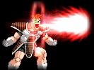Eraser Shot(S):
Note: If used while power is too low, Recoome will tire out.
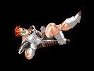Teleport Chaining: +
Note: Teleport chains can be performed after most basic/special attacks which launch the other player into the air.
Press any direction(not Up) + K + K to initiate teleport chains.
Supers:
Required power stocks represented in brakets "ex.[1]" Eraser Gun(S)[1]:
Eraser Gun(S)[1]: 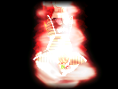Recoome Falling Star(S)[2]:
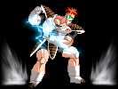Recoome Hyper Combo(S)[1-3]:
Note: This super automatically extended with each filled power bar Recoome has.
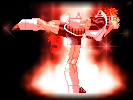Recoome Ultra Fighting Bomber(S)[3]:
Note: Recoome can be hit up to 9 times without this super cancelling. Recoome still takes full damage from hits.
Note2: This Super is unblockable. But damage is based on the opponents distance.
Chains and Fighting Tips:
|
1. When using the "Fireball Chain" special attack, continue tapping any 'P' button to chain up to 3 fireballs. 2. Recoome has 1 strike of armor mode during "Recoome Punch" and 8 strikes during his "Ultra Fighting Bomber". 3. Teleport attack commands: --Hold Forward+ Tap 2 Kick buttons simultaneously. --Hold Back+ Tap 2 Kick buttons simultaneously. --Hold Down+ Tap 2 Kick buttons simultaneously, This cannot be chain with by other Teleport Attacks. 4. Escape from Tired/Dizzy faster by tapping P and K buttons rapidly, if you succesfully recover, you will regain a small amount of power. 5. Recoome's attacks do less damage after each successful hit in a combo. After 10 hits he will only do 20% damage per attack. Supers are not affected by this. 6. Use air dash wisely, excessive use causes energy loss. When out of power you may only use a single air dash before landing. |
Credits and Shout Outs:
| Akira Toriyama - Dragon Ball, Dragon Ball Z, and Dragon Ball Kai. Bandai - Super Butouden and UB22. Atari - The Budokai games. SNK/NeoGeo - Some Sounds and effects. Capcom - Zangeif, and some ideas that I used without realizing(Falling Star is a ripoff of Zangief's super, I thought I had a nice original idea too!). SquareSoft/Enix - The super effect. Elecbyte - For Old MUGENs and Mugen 1.0! Christopher Sabat - English voice acting. Toad - For some of the FX. Mattasaur - The original KOF2000 hitsparks. Neocide - Improved Recoome sprites, and lots of nice ideas! Cyanide - Talking me out of that hopeless armor mode years ago! DW - Our Bojack was used as the base for the original, thus no Bojack would mean no Recoome. Wasaby - HitDef EnvShake idea. Pextin - Helpful Feedback. Majita - Helpful Feedback, flight idea, ripping the Recoome UB22 sprites, some of which we used. Roken - Fixing the fall sprite legs for us. OS Team - The Grab and Suplex sprites we used from your Nappa sheet! Lonewolf - Some very fun ideas! "Tokusentai! Tokusentai!" MV - Some DBZ sounds. Final Blast - Some more DBZ sounds. ggslash - All the Melty Blood effects. SesMCM - For MCM, which I used to build Recoome's SFF and SND. Adam @ www.silver-dawn.net - Sexy buttons for the command list. Wenchu - Your Nappa, the first DBZ grappler made for mugen! ZGTeam, Outer Haven, and MugenHispania Forums Everyone else that I have forgotten. E-mail me, if I forgot you I'm sure there's someone out there. |